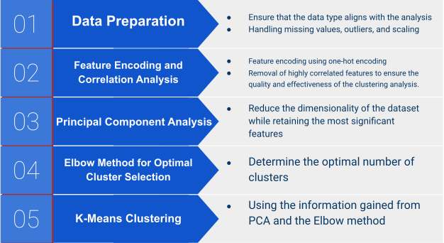

Customer Segmentation Analysis

Executive Summary: Our customer segmentation analysis, utilizing KMeans clustering, has revealed 6 distinct groups characterized by diverse demographic and behavioral attributes. I will outline actionable insights and strategic marketing approaches aimed at optimizing customer engagement and driving revenue growth within each group.
Analysis Reveals 6 Distinct Customer Segments:
| Group | Recommendations |
|---|---|
| Group 1 - Middle-aged moderate spenders | Segmented Offerings: Develop diverse product offerings and promotions |
| Group 2 - Affluent Wine Enthusiasts | Targeted Marketing: Premium wine offers & personalized marketing strategy |
| Group 3 - Young Frugal Shoppers | Segment-specific Promotions: Tailor promotions for high-value purchases |
| Group 4 - Upper Middle-aged Heavy Spender | Engagement Strategies: Develop targeted campaigns on meat products & In-store experiences |
| Group 5 - Elderly Conservative Shoppers | Customer Retention: Offer value-driven promotions and products |
| Group 6 - Middle-aged Balanced Spenders | Segmented Offerings: Develop diverse product offerings and promotions |
Action Plan:
- Conduct targeted marketing campaigns for each cluster, leveraging demographic and behavioral insights.
- Deploy personalized offers and promotions tailored to specific segments to maximize engagement and sales.
- Monitor campaign performance and customer feedback to iteratively refine marketing strategies.
- Invest in customer relationship management systems to enhance customer retention and loyalty across all clusters.
- Collaborate with cross-functional teams to ensure alignment between marketing initiatives and overall business objectives.
Customer Groups Information

This pie chart indicates that group1 comprises the largest proportion of individuals, with 24.5%, making up nearly a quarter of the total population studied. It suggests a significant portion of customers fall into this category. Group 6 and Group 3 are slightly smaller than Group 1, but they are still significant segments of the customer base. Group 4 and Group 5 have similar numbers of individuals, They represent around 16% of the population each, indicating their comparable importance within the customer base.Group 2 has the smallest number of individuals comparing with the other 5 groups.
Check the age and income distribution of our customer base
Despite a few outliers evident in the histograms, an analysis of the two histograms presented above reveals a predominant concentration of our customer base within the age bracket of 30 to 60 years old. Specifically, a substantial majority falls within the range of 40 to 50 years old. In terms of income distribution, our customer demographic primarily falls within the annual income range of 20,000 to 80,000 USD. Notably, the largest segment of our clientele earns between 40,000 to 60,000 USD annually, with a discernibly smaller proportion exhibiting higher income levels.
Now let's dive deep in each group
| Group | Age | Income | Purchase Behavior |
|---|---|---|---|
| Group 1: Middle-aged moderate spenders | 44 | Lower (average $39,025) | Moderate spending across different categories. Average spending on wines, meat products, and store purchases. |
| Group 2: Affluent Wine Enthusiasts | 43 | High (average $79,858) | Overall high spending. Higher proportion of spending on premium items like gold products. |
| Group 3: Young Frugal Shoppers | 37 | Lowest (average $25,790) | Low spending across categories, particularly on luxury items (wines and gold products). |
| Group 4: Upper Middle-aged Heavy Spender | 45 | High (average $75,793) | High spending on meat products. High proportion of store purchases. |
| Group 5: Elderly Conservative Shoppers | 48 | Moderate (average $50,580) | Conservative spending patterns. Moderate to low spending on various categories. |
| Group 6: Middle-aged Balanced Spenders | 47 | Moderate to high (average $63,626.83) | Balanced spending across different categories. Moderate total spending amount. |
Based on the detailed segmentation analysis of each group, we can formulate targeted strategies tailored to the specific characteristics of each segment. This approach is essential to ensure alignment between our actions and the unique needs and preferences of each customer group.
Methodology
You can find all the code and details of this project on here: Customer Segmentation Analysis